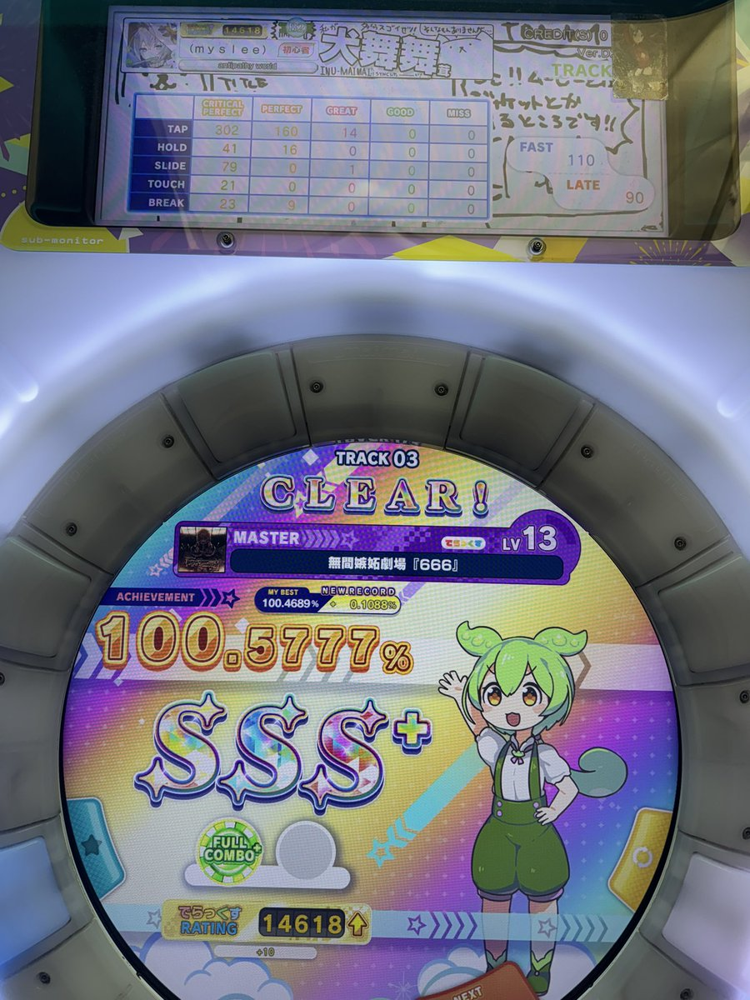
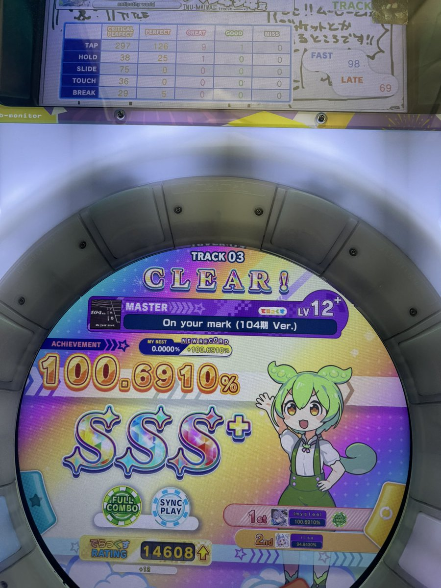

小虚空🍥
@tokerumaisurii
我现在认为虽然状态不好是真的，但是音画不同步是机器的问题，想了一下只会在某一个机位上发生，换个位置甚至换台机器就痊愈了。
求求机厅快把机器修了吧。
好想继续玩舞萌，一直玩舞萌，可惜又要等到月底才能再见了。


小虚空🍥
@tokerumaisurii
这几天脑袋好不清楚，好奇怪，打舞萌的时候哪怕早上吃过药也专注不够，时常感觉音画不同步和手脑不协调，需要自己强行在心里爆发出很高的兴奋度和很认真抓才勉强能做到反应对，差不多打四首歌只有一首没有那种惊掉下巴级别的莫名失误，和太久没玩也不一样，以前从来没有遇到这种情况，呜呜，我怎么了。